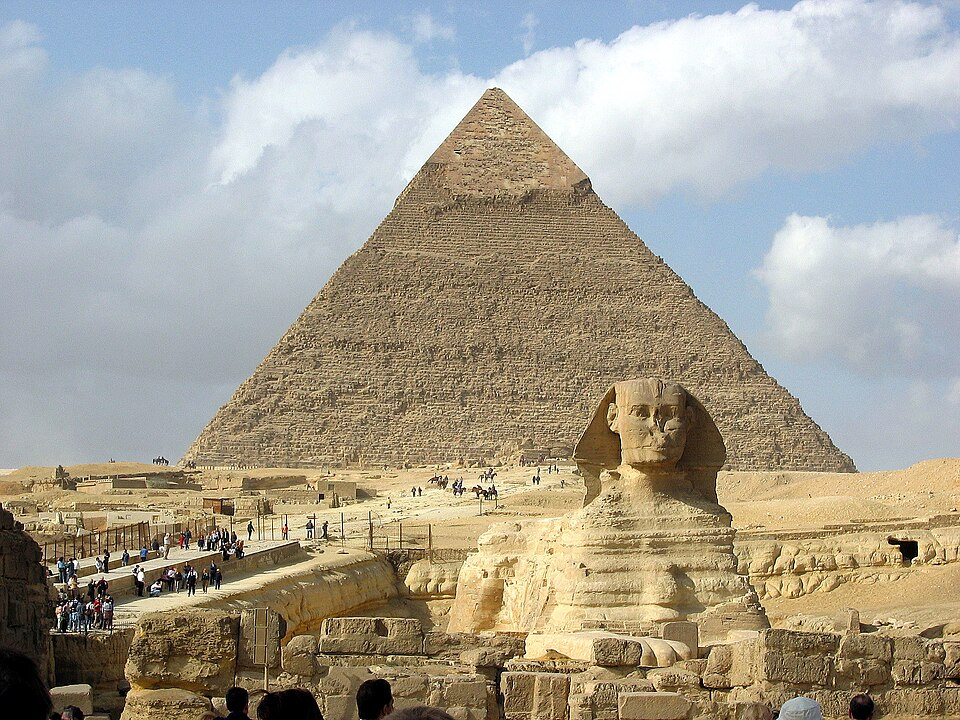

L'antico Egitto o antica civiltà egizia fu la cultura sviluppatasi lungo il fiume Nilo, dal delta nel Mar Mediterraneo a nord fino alle cateratte a sud, presso l'attuale confine tra Egitto e Sudan,[N 1] per un'estensione totale di circa 1000 km. Benché il territorio fosse molto più vasto, comprendendo gran parte anche del deserto libico-nubiano, gli insediamenti umani, fin dai tempi più remoti, si svilupparono solo nella stretta fascia verdeggiante a ridosso delle rive del fiume, larga, in alcuni punti, anche solo poche centinaia di metri.
La storia dell'antico Egitto copre, complessivamente, circa quattromila anni, dal 3900 a.C. (con il periodo predinastico) al 342 a.C. (con il periodo tardo) e comprende, dal 3200 a.C., trenta dinastie regnanti riconosciute archeo-storicamente. A queste debbono esserne aggiunte altre, dette di comodo, giacché riferite, di fatto, non a governi autoctoni, bensì frutto di invasioni o di raggiungimento del potere da parte di regnanti stranieri. Avremo perciò una XXXI dinastia, costituita da re persiani, una XXXII dinastia macedone, che annovera un solo sovrano, Alessandro Magno, e una XXXIII dinastia, meglio nota come dinastia tolemaica, nata dallo smembramento dell'impero di Alessandro.
La storia dell'antico Egitto copre, complessivamente, circa quattromila anni, dal 3900 a.C. (con il periodo predinastico) al 342 a.C. (con il periodo tardo) e comprende, dal 3200 a.C., trenta dinastie regnanti riconosciute archeo-storicamente. A queste debbono esserne aggiunte altre, dette di comodo, giacché riferite, di fatto, non a governi autoctoni, bensì frutto di invasioni o di raggiungimento del potere da parte di regnanti stranieri. Avremo perciò una XXXI dinastia, costituita da re persiani, una XXXII dinastia macedone, che annovera un solo sovrano, Alessandro Magno, e una XXXIII dinastia, meglio nota come dinastia tolemaica, nata dallo smembramento dell'impero di Alessandro.
Il fiume Nilo è stato il fulcro della civiltà egizia per la grande maggioranza della sua storia.[3] La fertile valle del Nilo diede ai suoi abitanti la possibilità di sviluppare un'economia stanziale basata sull'agricoltura e una società sempre più sofisticata e centralizzata che si rivelò uno dei fondamentali punti di partenza della storia della civiltà umana.[4] I primi cacciatori-raccoglitori nomadi si stanziarono nella valle del Nilo verso la fine del Medio Pleistocene, circa 120 000 anni fa. Intorno alla fine del Paleolitico, infatti, l'arido clima nordafricano cominciò a divenire sempre più caldo e secco, costringendo le popolazioni a stabilirsi lungo le coste.
Enormi progressi nell'architettura, nell'arte e nella tecnologia si ebbero durante l'Antico Regno, come risultato di un sensibile incremento della produzione agricola e del conseguente aumento demografico - il tutto controllato da un'amministrazione centrale sofisticata[23]. Alcuni dei più notevoli e celebri monumenti della civiltà egizia, come le Piramidi di Giza (complesso piramidale dedicato ai faraoni Cheope,Chefren e Micerino),la Grande Sfinge di Giza e la Statua di Chefren in trono, risalgono a questo periodo. Sotto la direzione del visir, gli amministratori statali raccoglievano le tasse, coordinavano i piani d'irrigazione necessari all'aumento della resa agricola, arruolavano i sudditi destinati alla costruzione delle opere pubbliche e presiedevano la giustizia[24].
Unitamente all'accresciuto prestigio del governo centrale, si affermò una nuova classe di scribi e funzionari altamente qualificati cui il faraone assegnava possedimenti in cambio dei loro servigi. I faraoni facevano inoltre concessioni terriere ai propri culti funerari e ai templi locali, con il fine di assicurare a queste istituzioni le risorse necessarie al culto post-mortem del sovrano stesso. Gli egittologi ritengono che tale pratica, continuata per ben cinque secoli, abbia lentamente consumato il potere economico e la ricchezza della casa reale, al punto di non poter più reggere efficientemente il peso di un'amministrazione centrale a tal punto sviluppata[25]. I governatori locali, chiamati nomarchi, cominciarono a sfidare l'autorità del faraone, la cui potenza stava gradualmente diminuendo. Questa crisi interna, tra il 2200 a.C. e il 2150 a.C., unita a gravi siccità ed eventi climatici disastrosi[26], gettò l'Egitto in centocinquant'anni di carestia e guerre civili: il cosiddetto Primo periodo intermedio[27].

La Grande Sfinge e la Piramide di Chefren a Giza